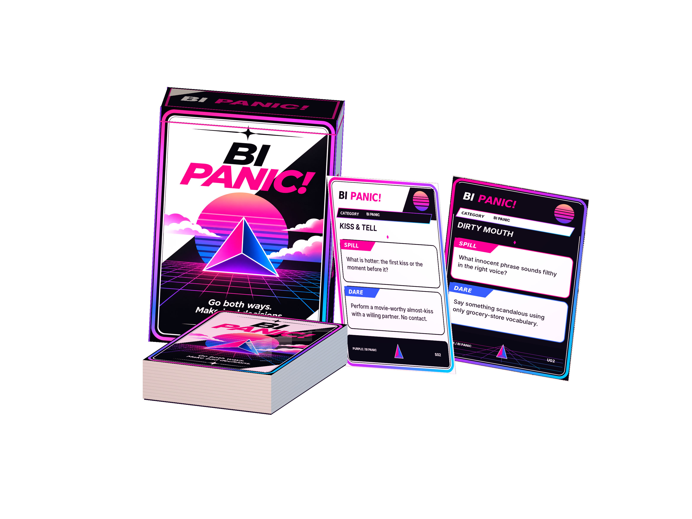
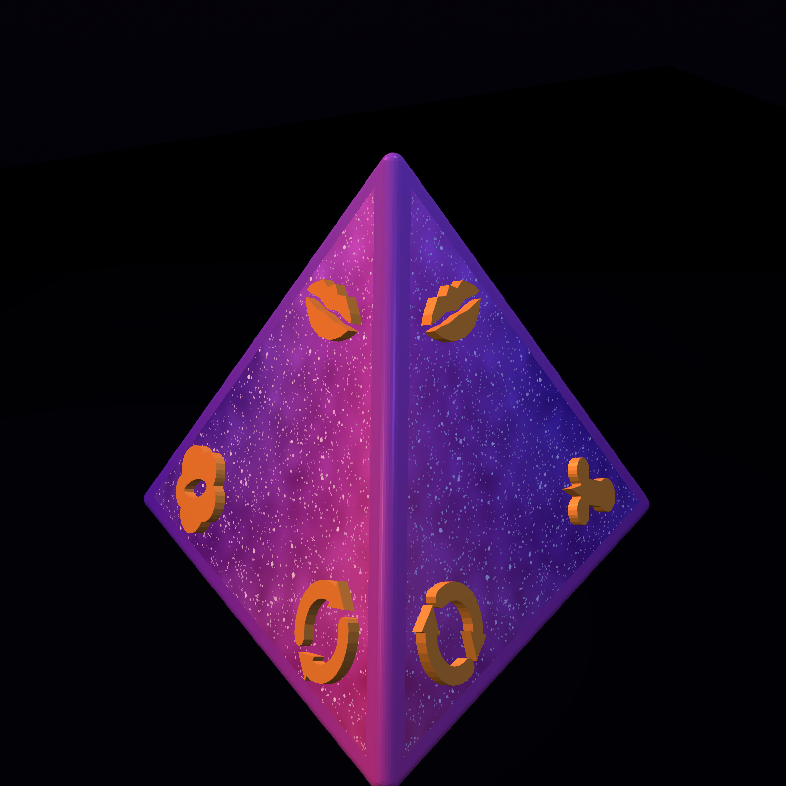
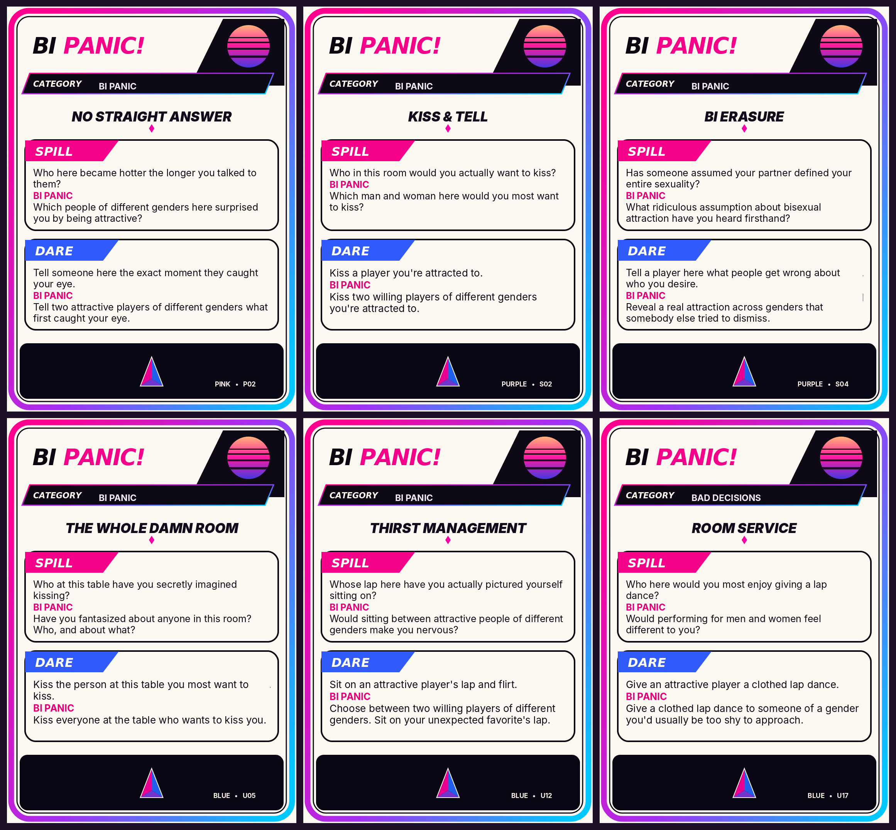
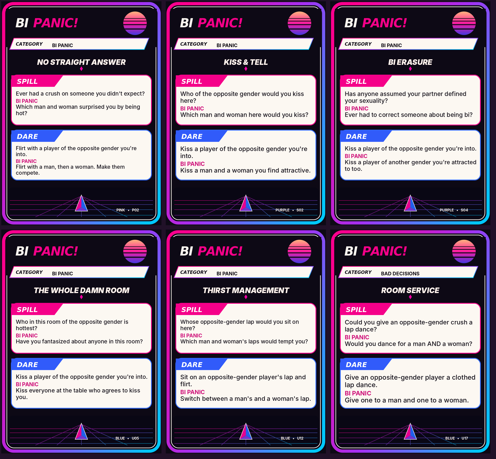

Deal three.
Every player starts with three private cards.

GREENKAPPA LABS / ORIGINAL PARTY GAME18+
Go both ways.
Make bad decisions.
A gloriously bisexual party game about crushes, confessions, flirting, and finding out your type might be a little less specific than you thought.
IN DEVELOPMENT / PLAYABLE BROWSER PROTOTYPE
PLAY NOW / 60-CARD BROWSER PROTOTYPE
Start a game with 4–12 adults on one shared device. Deal three private cards each, roll the custom Panic Die, and watch every turn become somebody’s problem.
Local pass-and-play · Ivory or Noir cards · No account · No multiplayer server · 18+
01 / THE IDEA
BI PANIC! takes the familiar setup of a truth-or-dare party game and gives bisexual chaos its own set of rules. It's made for a group of adults who enjoy outrageous questions, unexpected connections, and a little friendly embarrassment.
Each turn, the Panic Die changes who gets to play and who chooses the card. Pick a confession (SPILL) or a challenge (DARE), then decide whether to stick with the standard prompt or take the BI PANIC twist.
No points, no winner, no complicated rulebook to memorize. The fun is the conversation that happens afterward.
Every player starts with three private cards.
Its four faces determine how cards and players interact.
Choose a prompt, a twist, or pass. Refill and move clockwise.
02 / THE OBJECT

Neon gradients, sharp typography, ivory and noir card art, and a glittering four-sided die. The components have their own visual personality.
Optional interactive viewer uses the original GLB models. Requires WebGL and an internet connection to load the viewing library.
03 / INTERACTIVE MECHANIC PREVIEW
Four sides. Four ways to make the next turn somebody's problem. Try the turn selector below to explore the four turn modes.
This is a turn-mode preview. Play the complete 60-card pass-and-play prototype for actual cards and turn progression.

READY TO ROLL
Roll to reveal one of the four ways to play a turn.
Choose a card from your own hand and play it yourself.
Choose a card and invite another player to take it.
Other players submit cards. Choose one and invite a recipient. With 7–12 players, only the three players to your left submit.
Choose a card. Everyone gets an optional SPILL turn — no physical dares.
04 / THE CARDS
The current 60-card prototype offers four authored variations per card: standard SPILL and DARE, plus a BI PANIC version of each. The three color intensities let the game move from playful to bold.
Two visual treatments — ivory and noir — carry the same game content in a minimalist pink, purple and blue identity.
These are actual v1.0-P card proofs, not final retail masters. See the full 60-card deck in the playable prototype.


05 / DEVELOPMENT STATUS
BI PANIC! is for adults. Nobody has to disclose their identity, answer a question, or perform a dare. Anyone can decline without explanation or penalty; intimate contact requires freely given agreement from everyone involved.
The 60-card browser prototype is available to play locally with one shared device. Rules and content remain proposed; human playtesting, print production, and online multiplayer are not complete.